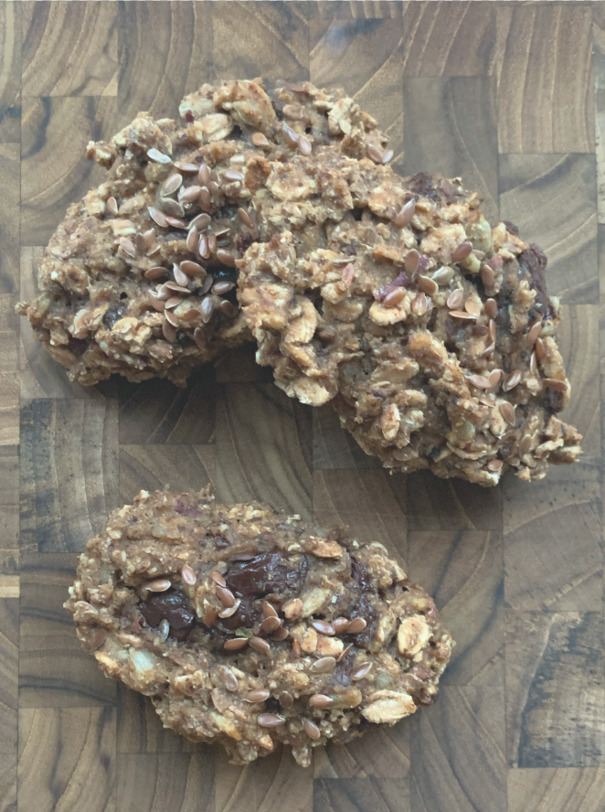

Opskrift
Chokorug

Ingredienser
1 kg
1 brev
1
7-8 dL
120-180 g
1
Rugbrødsblanding (Vi har ofte solsikkerugbrød og softkerne rugbrød)
Tørgær (hører med til blandingen)
Æble
Lunkent vand
Mørk chokolade
Drys (kan være hakkede nødder eller forskellige frø)
Knivspids salt
Fremgangsmåde
- Bland melblanding, salt og tørgær i en stor skål.
- Riv æblet fint og hak chokoladen groft.
- Tilsæt æblet og cirka halvdelen af vandet til dejen.
Pas på at vandet ikke er for lunt, da det vil smelte chokoladen ud i dejen.
- Tilsæt chokoladen. Kom mere vand i lidt efter lidt, indtil dejen har en jævn konsistens.
- Rør herefter dejen med en grydeske i 8-10 min. eller med en dejkrog i 5 min.
- Herefter formes “bollerne” med to spiseskeer eller med hænderne i en passende størrelse
og placeres på en bageplade.
- Drys bollerne med hakkede nødder eller frø efter eget valg og dæk pladerne til med et
viskestykke i en times tid.
- Chokorugene bages herefter på 170 grader varmluft i cirka 20 min. indtil de er faste.
- Lad køle inden servering.
Tip
Hvis du lader dem køle i 10 min. og fryser dem ned herefter,
så vil de holde på fugten når de så tøes op. De er super smarte til madpakken,
da de kan tages op af fryseren om morgen og så være klar til at blive spist ca. 2 timer efter.